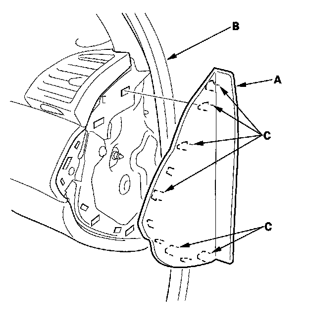
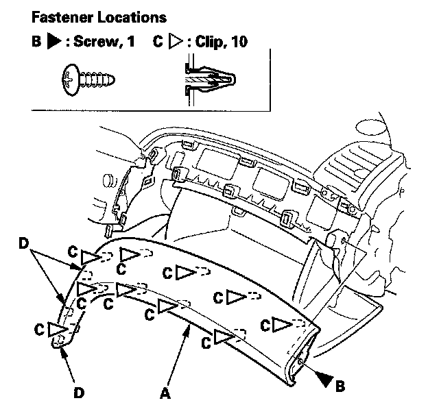

Passenger's Dashboard Trim
Passenger's Dashboard Trim Removal/InstallationSpecial Tools Required
KTC trim tool set SOJATP2014 *
* Available through the American Honda Tool and Equipment Program
NOTE:
- Take care not to scratch the dashboard and its related parts.
- Use the appropriate tool from the KTC trim tool set to avoid damage when removing components.

1. Open the front door, and remove the passenger's dashboard side cover (A).
1. Pull out the front door opening seal (B), as needed.
2. Gently pull out the front edge of the side cover, and pry the rear edge with a trim tool to release the hooks (C), then remove the side cover.
2. Open the glove box.

3. Remove the passenger's dashboard trim (A).
1. Remove the screw (B).
2. Gently pull out the lower edge and the outside edge of the trim by hand to detach all of the clips (C) and hooks (D).
4. Install the trim in the reverse order of removal, and note these items:
- If the clips are damaged or stress-whitened, replace them with new ones.
- Position the hooks first on installation, then move the clips into place.
- Push the clips and hooks into place securely.